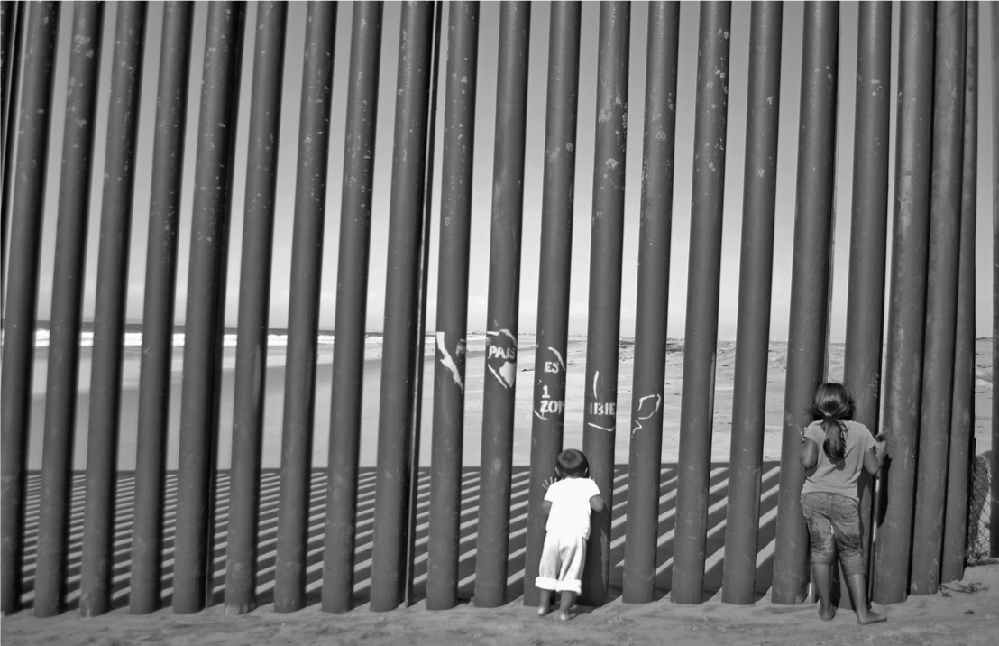

{% include header.html %}
{% include navbar.html %}
Latest Talk: 13 June 2019, 7:00-8:00 PM
Entre la espada y la pared: Latinx Immigrant Youth in the United States
Dr. Jodi Berger Cardoso, Ph.D., LCSW, University of Houston
Universitat Pompeu Fabra
Room 24.104 (Mercè Rodoreda building, Ciutadella Campus)

Download Poster
Featured Documentary
Through the Wall
An award-winning short documentary about a family separated by the US-Mexico border.
Directed by Tim Nackashi
Produced by Chelo Alvarez-Stehle and Tim Nackashi
Background:
A wall apart: divided families meet at a single, tiny spot on the US-Mexico border